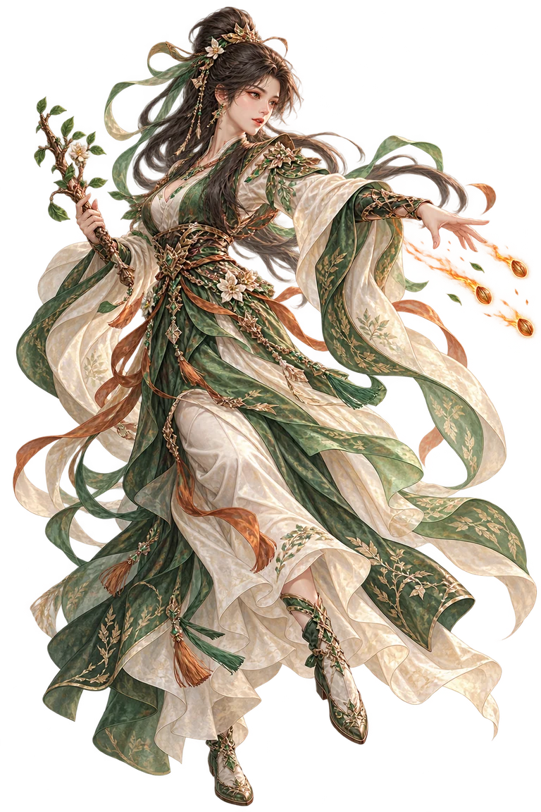

选择你的道途先选主修，再搭配六个神通
自选 1 对 1
左方操作，右方 AI 出招
当前主修
对手主修
自动斗法
可随时暂停，切回手动出招兼顾连招与生存，及时打断敌方蓄势。选择理由会写入斗法纪要。
青霄峰 · 论道台第一回合月明 · 无风

论 道
同境切磋 · 气血耗尽即认输
当前距离 中距
中距适合所有已装备神通。
距离只限制技能有效范围，不直接增减伤害。接近 / 拉开：1 行动点，改变 1 档双方距离。蓄势技能释放时也会检查距离。
五行灵气
行动点